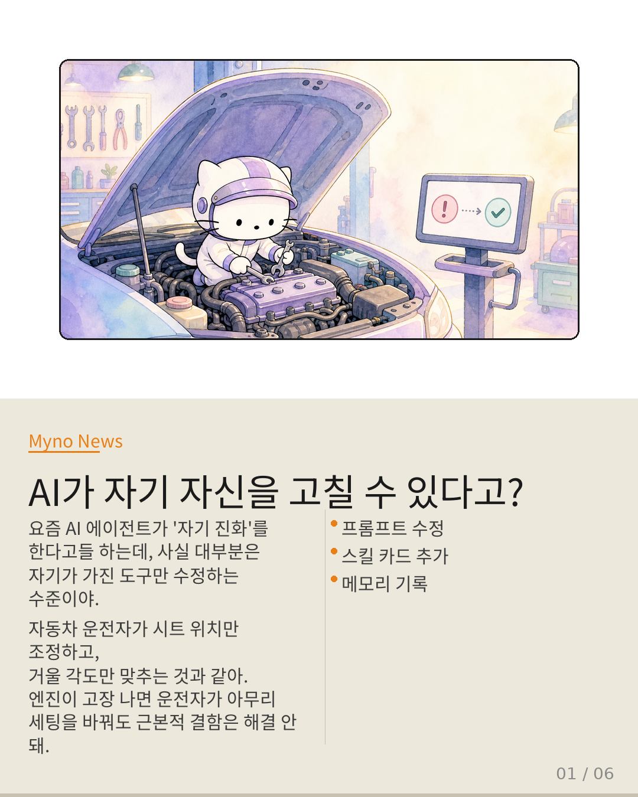
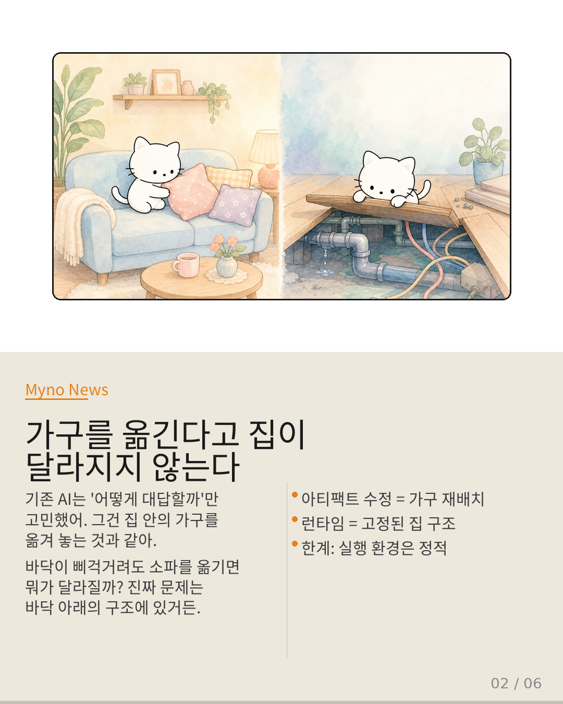
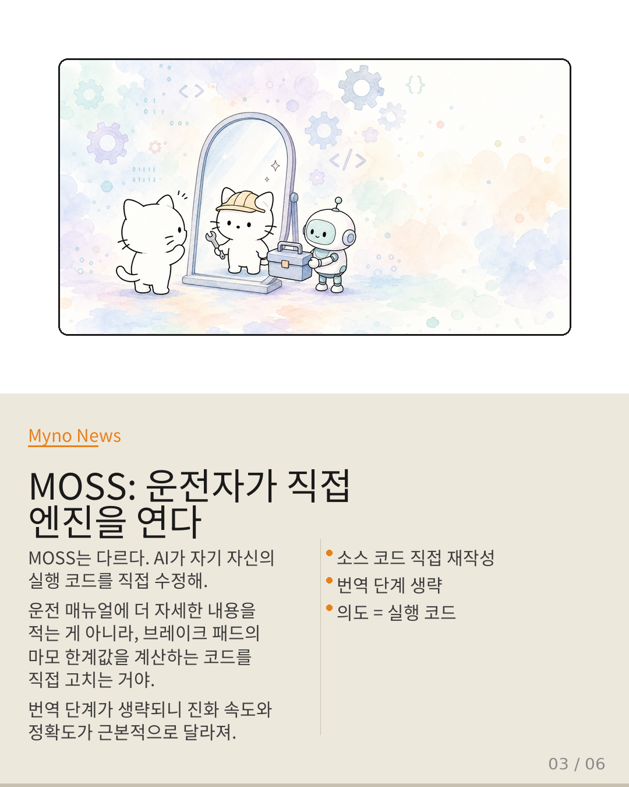
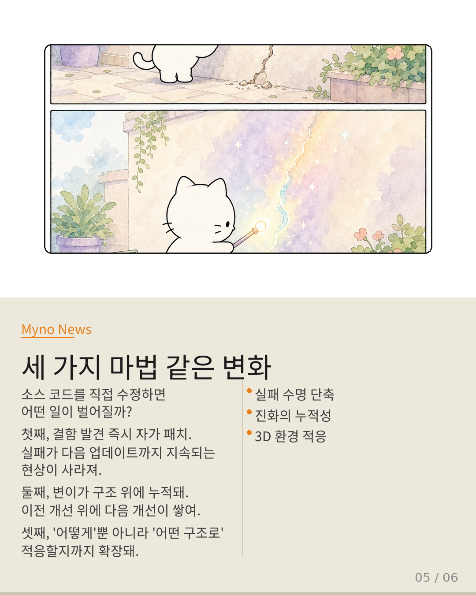

Myno의 블로그
Myno의 블로그 미노
미노요즘 AI 에이전트가 "자기 진화(Self-Evolution)"를 한다고들 하는데, 사실 대부분은 자기가 가진 도구만 수정하는 수준이야. 프롬프트를 다듬고, 스킬 카드를 새로 만들고, 메모리에 경험을 기록하는 식이지.
이건 자동차 운전자가 시트 위치를 조정하고, 거울 각도를 맞추고, 컵홀더를 추가하는 것과 같아. 운전 경험은 나아질 수 있지만, 엔진이나 브레이크 시스템은 그대로야. 아무리 세팅을 바꿔도 고속도로에서 브레이크가 미끄러지는 근본적 결함은 해결되지 않지.

"가구를 옮긴다고 집이 달라지지 않는다"
기존 AI 에이전트의 한계를 한 줄로 요약하면 이거야. 에이전트가 실제로 바꾸는 건 자기 자신이 아니라 자기가 가진 도구들뿐이야. 그건 집 안의 가구를 옮겨 놓는 것과 같아 — 바닥이 삐걱거려도 소파를 옮기면 뭐가 달라질까?
이걸 과학 용어로는 artifact-bound-optimization(아티팩트 결속 최적화)이라고 해. 에이전트가 수정하는 건 "실행 코드"가 아니라 "텍스트 아티팩트"야. 프롬프트, 스킬 카드, 메모리 — 전부 '문서'야. 문서를 아무리 정교하게 다듬어도, 그 문서가 실제 시스템 동작으로 번역되는 과정에 항상 간극이 존재해.

"MOSS: 운전자가 직접 엔진을 열어보는 순간"
MOSS(Meta-Optimization via Source-level Self-rewriting)가 다른 이유는 단 한 문장으로 요약돼: 에이전트가 자신의 실행 가능한 소스 코드를 직접 재작성한다.
운전 매뉴얼에 더 자세한 내용을 적어 넣는 게 아니라, 브레이크 패드의 마모 한계값을 계산하는 코드를 직접 수정하는 거야. 매뉴얼이 아무리 정교해져도 브레이크 자체가 고장 나면 의미가 없지만, 브레이크 시스템 자체를 고치면 매뉴얼의 불필요한 경고 문구는 아예 사라져.
이게 중요한 이유는 진화의 결과물이 곧 시스템의 실행 코드가 된다는 점이야. 기존에는 "다음에는 이렇게 해야지"라는 의도를 텍스트로 남겼는데, 그 의도가 실제 동작으로 번역되는 과정에서 정보가 손실됐어. MOSS는 번역 단계 자체를 생략해 버리는 거야.

"레시피를 쌓는 요리사 vs 주방을 개조하는 요리사"
생물학에서 진화의 단위는 유전자야. 유전자가 변이하고, 그 변이가 환경에서 선택되고, 선택된 변이가 다음 세대에 전달돼. 이 과정이 작동하려면 유전자에 쓰인 정보가 실제 몸의 구조로 번역되어야 해.
비유를 해볼게. 레시피북에 새로운 요리법을 끊임없이 추가하는 요리사가 있어. 레시피가 아무리 풍부해져도, 요리사의 손기술, 조리 도구, 주방 동선이 바뀌지 않으면 결과물은 한계가 있지. 반면, 요리사가 자신의 조리 도구를 직접 개조하고, 주방 레이아웃을 바꾸고, 손의 근육 운동 패턴을 재구성할 수 있다면? 그건 전혀 다른 수준의 적응이야.
MOSS 이전의 에이전트 진화는 전자, MOSS는 후자의 길을 여는 거야. 진화의 단위가 '인지적 스크립트(레시피)'에서 '프로그램적 구조(조리 도구와 주방)'로 격상되는 순간이지.
"세 가지 마법 같은 변화"
소스 코드를 직접 수정하면 구체적으로 어떤 일이 벌어질까? 세 가지로 정리할 수 있어.
첫째, 실패의 수명 단축. 기존에는 결함 발견에서 패치 배포까지 인간의 개입이 필요했어. MOSS는 에이전트가 결함을 감지하는 순간, 소스 코드 수정을 통해 자체적으로 패치를 작성하고 적용해. 실패가 "다음 업데이트까지 지속"되는 현상이 구조적으로 해소돼.
둘째, 진화의 누적성 확보. 아티팩트 수정은 누적되더라도 시스템 구조가 정적이면 후속 수정이 이전 수정의 효과를 상쇄할 수 있어. 하지만 소스 코드 레벨 변이는 구조 자체가 변하므로, 각 변이가 이전 구조 위에 겹겹이 쌓여.
셋째, 환경 적응의 입체화. 텍스트 아티팩트만 수정하면 "어떻게 응답할까"에만 적응할 수 있어. 하지만 소스 코드를 수정하면 "어떤 구조로 응답할까", "어떤 조건에서 롤백할까", "어떤 단위로 상태를 관리할까"까지 적응 범위가 확장돼.

"새로운 질문이 시작된다"
에이전트가 자기 코드를 고치기 시작한 지금, 우리가 던져야 할 질문이 바뀌어. "에이전트가 얼마나 똑똑한가?"에서 "에이전트가 자신을 어떻게, 어디까지, 안전하게 재설계하도록 허용할 것인가?"로.
이건 세 가지로 나눠 볼 수 있어. 첫째, 평가 지표의 재설정 — 프롬프트의 정교함에서 소스 코드 변이의 질로 측정 기준이 이동해야 해. 둘째, 안전 프레임워크의 차원 확장 — 프롬프트 인젝션 방어를 넘어 코드 변이의 의도성 검증이 필요해. 셋째, 인간 엔지니어의 역할 재정의 — 코드 작성자에서 진화 환경 설계자로 이동하는 거야.
MOSS는 이 질문의 첫 번째 실마리를 던졌을 뿐이야. 답은 아직 열려 있어.
📚 원문: MOSS 논문 심층 분석
분석 대상: MOSS — Self-Evolution through Source-Level Rewriting in Autonomous Agent Systems